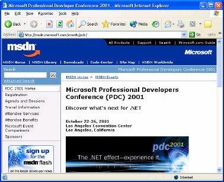
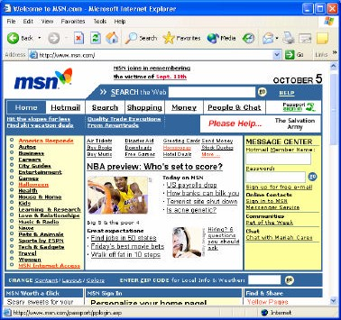
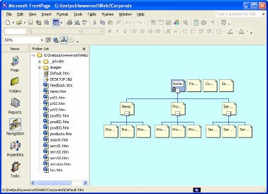
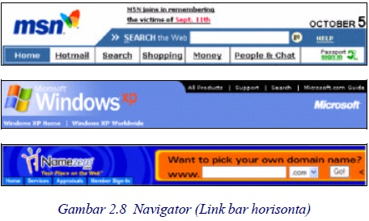
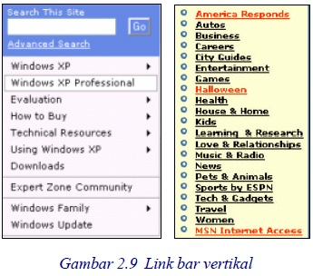
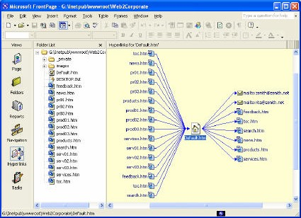
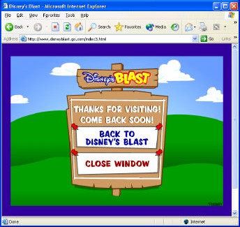

3 Pertimbangan desain
Frontpage XP adalah versi terbaru Frontpage, tool untuk desain web yang terkenal.
Seperti pendahulunya, Frontpage XP juga dikemas menjadi satu paket bersama
Word XP, Excel XP, Power Point XP, Access XP, Outlook XP yaitu sebagai
Microsoft Office XP.
Frontpage XP dirancang sebagai tool yang mudah untuk menghasilkan halaman atau
situs web, tanpa perlu pemrograman. Contoh hasilnya seperti Gambar 2.4.
Ada beberapa tahap yang diperlukan untuk men-disain situs web, yaitu:
1. Membuat daftar kebutuhan dan menetapkan tujuan
2. Mengorganisasi informasi
3. Menentukan struktur aplikasi
4. Menentukan struktur navigasi

Gambar 2.4 Undangan konferensi
3.1 Membuat daftar kebutuhan dan menetapkan tujuan
Tahap pertama adalah membuat daftar kebutuhan dan menetapkan tujuan. Ada
banyak kebutuhan perusahaan terhadap web. Mungkin mereka perlu memasarkan
produk, atau sekedar mengenalkan perusahaan.
Ada banyak tujuan juga, mengapa orang perlu membuat situs. Untuk bisnis,
akademis, sosial, media hobi dan sebagainya. Ada situs personal (perorangan atau
kelompok), ada situs perusahaan, ada juga situs yang berukuran lebih besar lagi,
yang sering disebut dengan portal.
Portal biasanya bersifat menggalang situs-situs lain, dengan cara menyediakan
sarana akses ke masing-masing situs anggota. Sarana tersebut bisa berupa link atau
mesin pencari. Contoh portal adalah MSN.com, seperti Gambar 2.5. Perhatikan
halaman Home page MSN.com tersebut, hampir tidak ada informasi mendalam di
sana, yang ada adalah kumpulan alamat situs lain yang demikian banyak. Home
portal mirip dengan halaman daftar isi pada sebuah buku.

Gambar 2.5 Situs berupa portal
langsung dengan pengunjung, ataukah menyediakan sarana agar terjadi perdagangan
antara pengunjung satu dengan pengunjung lainnya. Jenis yang pertama sering
disebut B to C (Bussines to Consumen) dan yang kedua disebut B to B (Bussines to
Bussines).
3.2 Mengorganisasi informasi
Setelah menetapkan tujuan berdasarkan kebutuhan, selanjutnya Anda perlu
menyusun berbagai informasi tersebut agar tidak acak-acakan.
Kumpulkan informasi sejenis, sehingga diperoleh beberapa klasifikasi informasi.
Misalnya pada suatu perusahaan, Anda bisa mengumpulkan informasi berdasarkan
departemen atau bagian tersendiri.

Gambar 2.6 Organisasi membentuk piramida
Jika di dalam suatu kelompok informasi masih terdapat begitu banyak informasi,
bedakan tingkat kepentingannya. Misalnya suatu bagian adalah induk dari beberapa
seksi. Sehingga terbentuk susunan sesuai hirarki (tingkatan).
Dengan pola yang sama (mencari hirarki), Anda bisa saling mengaitkan kelompokkelompok
informasi tersebut dan biasanya membentuk suatu piramida. Lihat
Gambar 2.5. Proses ini dapat dengan mudah Anda laksanakan dengan Frontpage XP.
3.3 Menentukan struktur aplikasi
Nah, setelah mengetahui koneksitas antar kelompok informasi, selanjutnya Anda
perlu merancang aplikasinya pada web.
Masing-masing titik bisa diwujudkan menjadi satu halaman. Jadi, untuk sebuah
kelompok, katakanlah bagian keuangan, yang memiliki tiga anak berupa seksi, yaitu
seksi bendahara, seksi akuntansi dan seksi anggaran, maka diperlukan empat
halaman.
Selanjutnya Anda perlu menentukan urutan penampilan halaman. Yang pertama
tampil haruslah induk dari seluruh induk, dan akan disebut Home page. Selanjutnya,
Anda harus membuat link ke lapisan berikutnya, yaitu anak-anak sulungnya. Nah, di
sini Anda bisa berkreasi dalam urutan penempatan link anak. Anak mana yang akan
ditempatkan lebih atas, dan mana yang menyusul.
Pertimbangan yang bisa Anda gunakan adalah:
• permintaan perusahaan tersebut
• kemudahan pemakaian
• estetika
Jika demikian banyak anak yang harus dibuatkan link, hal ini akan menimbulkan
kebosanan bagi pengunjung. Anda bisa memberi daya tarik kepada link tertentu yang
dirasa perlu, sehingga pengunjung tidak pergi dari halaman tersebut.
Ada banyak cara untuk membuat daya tarik, misalnya tombol, tab, icon, gambar
yang indah, gambar dengan animasi, kalau perlu usahakan yang lucu atau bombastis.
Link yang lebih penting biasanya diletakkan di bagian atas berupa tab atau tombol
yang dipasang pada suatu bar, sering disebut dengan navigator atau link bar
horisontal. Gambar 2.8 menunjukkan beberapa contohnya.

Selain navigator, masih ada lagi link bar vertikal, lihat Gambar 2.9 yang biasanya
terletak di sebelah halaman. Dengan FrontPage XP, Anda bisa membuat kedua jenis
link bar ini dengan mundah sekali.

Bagaimana menghadapi pengunjung yang tidak sabaran atau memang tergesa-gesa?
Pengunjung demikian biasanya telah memiliki tujuan tertentu pada situs Anda.
Misalnya hendak mencari informasi tertentu. Mereka tidak akan membuka link-link
yang disediakan, sebab akan memakan waktu.
Untuk menghadapi pengunjung jenis ini, sediakan saja sarana pencari, sehingga
mereka tidak perlu membuka link, cukup menuliskan yang merekan inginkan. Itulah
sebabnya pada navigator sering terdapat sarana pencari. Pada beberapa situs, sarana
pencari tersebut ditampilkan secara menyolok.
3.4 Menentukan struktur navigasi
Selanjutnya Anda perlu menentukan struktur navigasi, yaitu kait-mengkait di antara
halaman-halaman di dalam situs.

Gambar 2.10 Link dari halaman Default.htm (Home Page)
Anda bisa saja membuat kaitan antar seluruh halaman yang ada. Kelebihannya,
pengunjung bisa membuka seluruh halaman web dari halaman manapun pada situs.
Namun model seperti ini justru tidak diterapkan, sebab orang akan kehilangan
hirarki, seolah-olah seluruh halaman adalah sejajar dan bisa dimulai dari mana saja.
Selain itu, seluruh halaman akan dipenuhi dengan link, tidak ada lagi tempat untuk
informasi. Padahal suatu halaman baik adalah yang lebih banyak informasinya,
dibanding jumlah link, hal ini terutama bagi halaman ujung.
Dan paling dirugikan adalah Anda sendiri, sebab jalur link akan seperti benang
kusut, bikin pusing. Percuma saja Anda susah-susah menyusun organisasi informasi,
kalau tatanan tersebut toh akan Anda acak-acak lagi dengan link kusut.
induknya serta ke Home Page. Tidak boleh ada lin k ke halaman yang sejajar dengan
dia. Atau dengan kata lain, link hanya untuk membentuk arus vertikal (ke bawah dan
ke atas saja).
Situs dengan sedikit halaman (maksimun 10) mungkin tidak akan menimbulkan
masalah link bagi Anda. Namun, sebuah portal akan menyediakan bom waktu
bernama link, jika Anda tidak hati-hati mengelolanya.
Untuk mengelola link, Frontpage XP telah menyediakan sarananya. Anda bisa
menampilkan kait-mengait halaman dalam bentuk diagram, lihat Gambar 2.10.
Pada suatu situs tunggal (bukan portal), karena tidak dibebani oleh bagitu banyak
link, maka navigator bisa berbebtuk lebih indah dan menarik, misalnya seperti
Gambar 2.11.

Gambar 2.11 Navigasi memanfaatkan halaman akhir
Copyright © Herlan Lesmana
Created with the Freeware Edition of HelpNDoc: Single source CHM, PDF, DOC and HTML Help creation